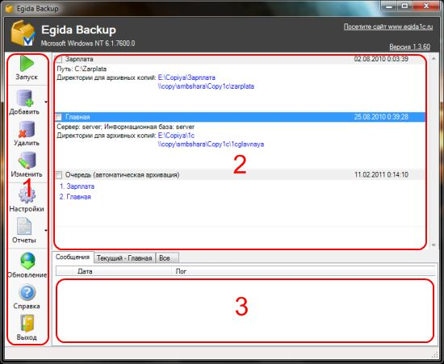

Описание главного окна программы

1 — Меню программы. Содержит кнопки, выполняющие основные действия по управлению программой:
добавление, редактирование и удаление заданий;
запуск обновления программы;
вызов справочной информации;
выход из программы.
Кнопки Добавить, Удалить, Изменить выполняют соответствующие действия с заданиями на экране.
Кнопка Запуск помещает в очередь на выполнение все задания помеченные маркером в текущий момент.
Кнопка Обновление запускает программу автоматического обновления из Интернета. Если версия программы не требует обновления будет выведено соответствующее сообщение. Иначе программа скачает все необходимые данные и предложит перезапуститься. Обновление будет установлено при следующем запуске программы.
2 — Список заданий. Содержит перечень созданных заданий с краткой информацией о заданных настройках. У каждого задания есть маркер, обозначающий что задание выделено. Маркер представлен в виде элемента управления переключатель и находиться в левом верхнем углу задания.
3 — Сообщения о выполнении заданий. Все сообщения, которые появляются при выполнении заданий помещаться в лог. На вкладке Сообщения, находятся все события произошедшие в данном сеансе работы с программой. На вкладке Текущий находятся события, принадлежащие выделенному заданию в списке. Вкладка Все содержит все сообщения, сохраненные с момента установки программы. Любую из 3-х вкладок можно очистить, щелкнув по ней правой кнопкой мыши и выбрав из контекстного меню пункт Очистить.
При закрытии окна стандартным способом через крестик в правом верхнем углу окна программа остается работать в фоне и сворачивается в системный трей. Оттуда ее можно вызвать двойным щелчком мыши. Для завершения работы программы необходимо нажать кнопку Выход из меню программы.